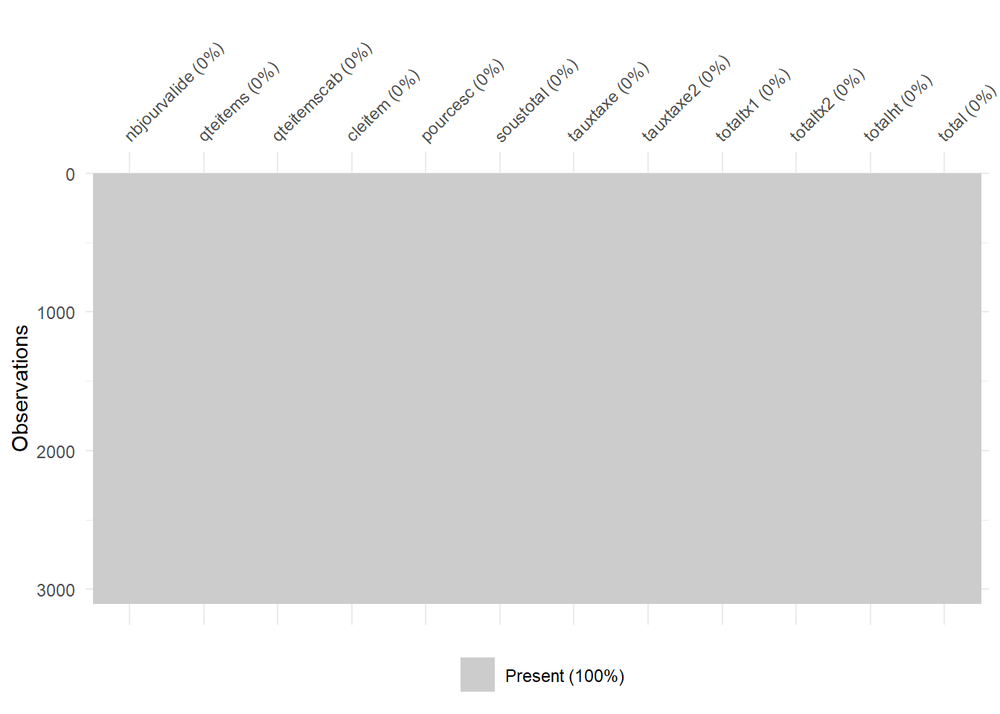
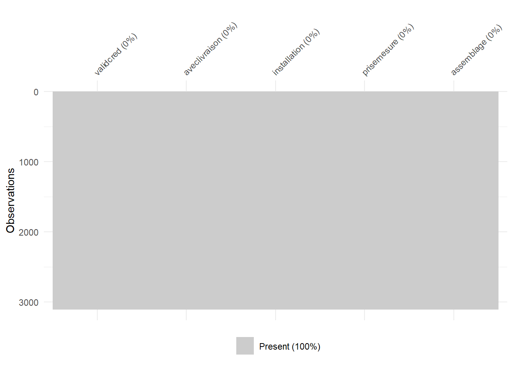
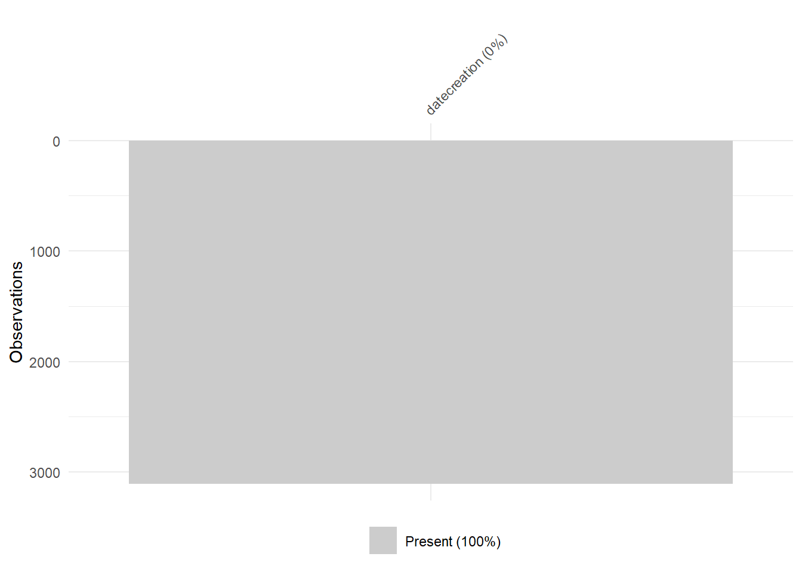

Rows: 3,104
Columns: 169
$ `$codeClient2` <chr> "ALaplante", "ABrealt", "ACloutier", "…
$ `$dateReqExped` <chr> "2025-03-10true", "2025-04-14true", NA…
$ `$dateValidite` <chr> "2025/03/10", "2025/04/12", NA, "2025/…
$ `$delaiPrevExped` <chr> "2", "2", "2", "2", "2", "2", "2", "2"…
$ `$disclaimers` <chr> "PriseMesure_100Electro_90", "PriseMes…
$ `$emplacementCre` <chr> "Interne", "Interne", "Interne", "Inte…
$ `$etapes` <chr> "alaplante2025/01/09ManufacturierSaisi…
$ `$identCour` <chr> "0", "0", "0", "0", "0", "0", "0", "0"…
$ `$nbJourValide` <chr> "60", "90true", "60", "60", "90true", …
$ `$nomClient` <chr> "ALaplante", "ABrealt", "ACloutier", "…
$ `$projet` <chr> "P-001666", "P-001471", "P-000907", "P…
$ `$promotions` <chr> "", NA, NA, "", "", "", NA, NA, NA, ""…
$ `$qteItems` <chr> "51", "54", "41", "35", "52", "35", "2…
$ `$qteItemsCab` <chr> "30", "24", "19", "18", "26", "18", "1…
$ `$roleProprietaire` <chr> "Employe", "Employe", "Employe", "Empl…
$ `$sommairesKits` <chr> "k011Custom008885.54k022Custom004085.6…
$ `$sorte` <chr> "Contrat", "Contrat", "Contrat", "Cont…
$ `$type` <chr> "Regulier", "Regulier", "Regulier", "R…
$ `$typeClient` <chr> "particulier", "particulier", "particu…
$ `$typeProcess` <chr> "interne", "interne", "interne", "inte…
$ `$validCred` <chr> "true", "true", "true", "true", "true"…
$ ligne <chr> "Custom", "Custom", "Custom", "Custom"…
$ `$cleEnMain` <chr> "true", "true", "true", "true", "true"…
$ `$dateDebValidite` <chr> "2025-01-10true", "2025-01-13true", NA…
$ `$installateur` <chr> "particuliers", "particuliers", "parti…
$ `$installation` <chr> "true", "true", "true", "true", "true"…
$ `$lumieres` <chr> "PUCK120mm_NI2PUCK79mm_NI5", "PUCK79mm…
$ `$priseMesure` <chr> "true", "true", "true", "true", "true"…
$ assemblage <chr> "Assemble", "assemble", "assemble", "a…
$ edgeColle <chr> "pur", "pur", "pur", "pur", "pur", "pu…
$ gamme <chr> "gamme_2", "gamme_2", "gamme_2", "gamm…
$ `$cleItem` <chr> "979", "1671", "1232", "497", "1000", …
$ `$createurCourriel` <chr> "alaplante@avivia.ca", "abreault@avivi…
$ `$createurNom` <chr> "Audrey Laplante", "Azély Breault", "A…
$ `$dateCreation` <chr> "2025/01/09", "2025/01/13", "2025/02/2…
$ `$division` <chr> "Division_1", "Division_1", "Division_…
$ `$documCree` <chr> "1", "1", "1", "1", "1", "1", "1", "1"…
$ `$ref1` <chr> "Cuisine V1true", "Plan cuisine (versi…
$ `$sauvegarde` <chr> "true", "true", "true", "true", "true"…
$ gammedesc <chr> "gamme_desc_2true", "gamme_desc_2true"…
$ `$code` <chr> "P-001666-S1", "P-001471-S8", "P-00090…
$ `$codeTaxe` <chr> "TPS", "TPS", "TPS", "TPS", "TPS", "TP…
$ `$codeTaxe2` <chr> "TVQ", "TVQ", "TVQ", "TVQ", "TVQ", "TV…
$ `$pourcEsc` <chr> "0", "0", "0", "0", "0", "0", "0", "0"…
$ `$pourcEscSup` <chr> "0", "0", NA, "0", "0", "0", "0", "0",…
$ `$sousTotal` <chr> "12971.2", "10167.35", "14746.37", "88…
$ `$sousTotal2` <chr> "19868.85", "10246.6", "14947.76", "89…
$ `$tauxTaxe` <chr> "5", "5", "5", "5", "5", "5", "5", "5"…
$ `$tauxTaxe2` <chr> "9.975", "9.975", "9.975", "9.975", "9…
$ `$total` <chr> "22844.21", "15750.67", "20895.79", "1…
$ `$totalHT` <chr> "19868.85", "13699.21", "18174.2", "11…
$ `$totalTx1` <chr> "993.44", "684.96", "908.71", "572.23"…
$ `$totalTx2` <chr> "1981.92", "1366.5", "1812.88", "1141.…
$ `$avecLivraison` <chr> "1", "1", "1", "1", "1", "1", "1", "1"…
$ `$cumulInstall` <chr> "2461.97", "2649.12", "2369.97", "1629…
$ `$cumulVolume` <chr> "290.84", "202.28", "239.88", "138.18"…
$ `$ecartPrix` <chr> "", "", "", "", "", "", "", "true", ""…
$ `$fraisPDM` <chr> "PSD", "120", "120", "120", "120", "PS…
$ `$fraisPSD` <chr> "PSD_PDM_INS_LIV", NA, NA, NA, NA, "PS…
$ `$montantEcartPrix` <chr> "", "", "", "", "", "", "", "0.4648757…
$ `$pourcEscAutre` <chr> "0", "0", "0", "0", "0", "0", "0", "0"…
$ `$pourcEscCab` <chr> "0", "0", "0", "0", "0", "0", "0", "0"…
$ `$pourcEscComptoir` <chr> "0", "0", "0", "0", "0", "0", "0", "0"…
$ `$pourcEscMoulure` <chr> "0", "0", "0", "0", "0", "0", "0", "0"…
$ `$pourcEscPanel` <chr> "0", "0", "0", "0", "0", "0", "0", "0"…
$ `$sousTotal2_ClientFinal` <chr> "19868.85", "10246.6", "14947.76", "89…
$ `$sousTotalAutre` <chr> "79.25", "79.25", "201.39", "79.25", "…
$ `$sousTotalAutre_Dealer` <chr> "79.25", "79.25", "201.39", "79.25", "…
$ `$sousTotalCab` <chr> "12165.4", "9240.67", "13370.61", "791…
$ `$sousTotalComptoir` <chr> "6818.4", NA, NA, NA, NA, NA, "2490.6"…
$ `$sousTotalComptoir_Dealer` <chr> "6818.4", NA, NA, NA, NA, NA, "2490.6"…
$ `$sousTotalMoulure` <chr> "161.45", "172.49", "216.43", "182.2",…
$ `$sousTotalPanel` <chr> "644.35", "754.19", "1159.33", "723.94…
$ `$sousTotalService` <chr> "PSD", "3452.61", "3226.44", "2539.44"…
$ `$sousTotalServiceEsc` <chr> "PSD", "3452.61", "3226.44", "2539.44"…
$ `$sousTotal_Dealer` <chr> "12971.2", "10167.35", "14746.37", "88…
$ `$totalComptoirQuartz` <chr> "6818.4", NA, NA, NA, "true", NA, "249…
$ `$totalEscService` <chr> "", NA, NA, NA, NA, "", NA, NA, "", NA…
$ `$totalHT_CF` <chr> "19868.85", "13699.21", "18174.2", "11…
$ `$totalInstall` <chr> "PSDnullvalide_CodePostal", "2949.12",…
$ `$totalLivraison` <chr> "PSD", "383.49", "436.47", "489.66", "…
$ `$totalTx1_CF` <chr> "993.44", "684.96", "908.71", "572.23"…
$ `$totalTx2_CF` <chr> "1981.92", "1366.5", "1812.88", "1141.…
$ `$total_CF` <chr> "22844.21", "15750.67", "20895.79", "1…
$ `$sousTotal2Eff` <chr> "19868.85", "14143.49", "15047.76", "1…
$ `$sousTotalAutreEff` <chr> "79.25", "79.25", "201.39", "79.25", "…
$ `$sousTotalAutre_DealerEff` <chr> "79.25", "79.25", "201.39", "79.25", "…
$ `$sousTotalCabEff` <chr> "12165.4", "9240.67", "13370.61", "791…
$ `$sousTotalComptoirEff` <chr> "6818.4", "3896.89", "100", "2818.8", …
$ `$sousTotalComptoir_DealerEff` <chr> "6818.4", "3896.89", "100", "2818.8", …
$ `$sousTotalEff` <chr> "12971.2", "10167.35", "14746.37", "88…
$ `$sousTotalMoulureEff` <chr> "161.45", "172.49", "216.43", "182.2",…
$ `$sousTotalPanelEff` <chr> "644.35", "754.19", "1159.33", "723.94…
$ `$sousTotal_DealerEff` <chr> "12971.2", "10167.35", "14746.37", "88…
$ `$totalComptoirQuartzEff` <chr> "6818.4", "3788.4", "100", NA, "6595.3…
$ contrats <chr> "P-001666-S1", "P-001471-S8", "P-00090…
$ `$avertLivraison` <chr> NA, "Cout_Livraison_Peut_Modif", "Cout…
$ `$codePost` <chr> NA, "G9H 3K1", "J0K 1V0", "G2C 2J1", "…
$ `$codePostFinal` <chr> NA, "G9H 3K1", "J0K 1V0", "G2C 2J1", "…
$ `$totalComptoirStratifieEff` <chr> NA, "108.49", NA, NA, NA, NA, NA, NA, …
$ `$totalComptoirGraniteEff` <chr> NA, NA, NA, "2818.8", NA, NA, NA, NA, …
$ `$totalEscComptoirQuartzEff` <chr> NA, NA, NA, NA, "", NA, NA, NA, NA, NA…
$ `$dateTransfert` <chr> NA, NA, NA, NA, NA, NA, "2025/01/16", …
$ `$signatureValidation` <chr> NA, NA, NA, NA, NA, NA, "truetrue", NA…
$ `$estBloqPrix` <chr> NA, NA, NA, NA, NA, NA, "true", "true"…
$ `$totalComptoirStratifie` <chr> NA, NA, NA, NA, NA, NA, NA, NA, "98.49…
$ `$enErreur` <chr> NA, NA, NA, NA, NA, NA, NA, NA, NA, NA…
$ `$estReprise` <chr> NA, NA, NA, NA, NA, NA, NA, NA, NA, NA…
$ `$appNotifObligs` <chr> NA, NA, NA, NA, NA, NA, NA, NA, NA, NA…
$ `$appNotifs` <chr> NA, NA, NA, NA, NA, NA, NA, NA, NA, NA…
$ `$enPSD` <chr> NA, NA, NA, NA, NA, NA, NA, NA, NA, NA…
$ `$statutCJobsite` <chr> NA, NA, NA, NA, NA, NA, NA, NA, NA, NA…
$ `$statutCred` <chr> NA, NA, NA, NA, NA, NA, NA, NA, NA, NA…
$ `$ciClient` <chr> NA, NA, NA, NA, NA, NA, NA, NA, NA, NA…
$ `$memeCoordsJSCF` <chr> NA, NA, NA, NA, NA, NA, NA, NA, NA, NA…
$ `$statutJobsite` <chr> NA, NA, NA, NA, NA, NA, NA, NA, NA, NA…
$ `$fuelExtra` <chr> NA, NA, NA, NA, NA, NA, NA, NA, NA, NA…
$ `$paletteNet` <chr> NA, NA, NA, NA, NA, NA, NA, NA, NA, NA…
$ `$transpCumul` <chr> NA, NA, NA, NA, NA, NA, NA, NA, NA, NA…
$ `$transpExtra` <chr> NA, NA, NA, NA, NA, NA, NA, NA, NA, NA…
$ `$transpJobSite` <chr> NA, NA, NA, NA, NA, NA, NA, NA, NA, NA…
$ `$transpNet` <chr> NA, NA, NA, NA, NA, NA, NA, NA, NA, NA…
$ `$cumulService` <chr> NA, NA, NA, NA, NA, NA, NA, NA, NA, NA…
$ `$totalComptoirBois` <chr> NA, NA, NA, NA, NA, NA, NA, NA, NA, NA…
$ `$totalComptoirGranite` <chr> NA, NA, NA, NA, NA, NA, NA, NA, NA, NA…
$ `$totalEscComptoir` <chr> NA, NA, NA, NA, NA, NA, NA, NA, NA, NA…
$ `$unit` <chr> NA, NA, NA, NA, NA, NA, NA, NA, NA, NA…
$ `$escSup` <chr> NA, NA, NA, NA, NA, NA, NA, NA, NA, NA…
$ `$totalComptoirBoisEff` <chr> NA, NA, NA, NA, NA, NA, NA, NA, NA, NA…
$ `$memeCoordsJS` <chr> NA, NA, NA, NA, NA, NA, NA, NA, NA, NA…
$ `$commentaires` <chr> NA, NA, NA, NA, NA, NA, NA, NA, NA, NA…
$ `$totalEscAutre` <chr> NA, NA, NA, NA, NA, NA, NA, NA, NA, NA…
$ `$totalEscCab` <chr> NA, NA, NA, NA, NA, NA, NA, NA, NA, NA…
$ `$totalEscMoulure` <chr> NA, NA, NA, NA, NA, NA, NA, NA, NA, NA…
$ `$totalEscPanel` <chr> NA, NA, NA, NA, NA, NA, NA, NA, NA, NA…
$ `$totalEscAutreEff` <chr> NA, NA, NA, NA, NA, NA, NA, NA, NA, NA…
$ `$totalEscCabEff` <chr> NA, NA, NA, NA, NA, NA, NA, NA, NA, NA…
$ `$totalEscComptoirEff` <chr> NA, NA, NA, NA, NA, NA, NA, NA, NA, NA…
$ `$totalEscMoulureEff` <chr> NA, NA, NA, NA, NA, NA, NA, NA, NA, NA…
$ `$totalEscPanelEff` <chr> NA, NA, NA, NA, NA, NA, NA, NA, NA, NA…
$ `$totalEscComptoirStratifieEff` <chr> NA, NA, NA, NA, NA, NA, NA, NA, NA, NA…
$ `$totalEscComptoirBoisEff` <chr> NA, NA, NA, NA, NA, NA, NA, NA, NA, NA…
$ `$totalEscComptoirGraniteEff` <chr> NA, NA, NA, NA, NA, NA, NA, NA, NA, NA…
$ `$courrielCharge` <chr> NA, NA, NA, NA, NA, NA, NA, NA, NA, NA…
$ `$nomCharge` <chr> NA, NA, NA, NA, NA, NA, NA, NA, NA, NA…
$ `$telephoneCharge` <chr> NA, NA, NA, NA, NA, NA, NA, NA, NA, NA…
$ `$condition01` <chr> NA, NA, NA, NA, NA, NA, NA, NA, NA, NA…
$ `$condition02` <chr> NA, NA, NA, NA, NA, NA, NA, NA, NA, NA…
$ `$condition03` <chr> NA, NA, NA, NA, NA, NA, NA, NA, NA, NA…
$ `$condition04` <chr> NA, NA, NA, NA, NA, NA, NA, NA, NA, NA…
$ `$condition05` <chr> NA, NA, NA, NA, NA, NA, NA, NA, NA, NA…
$ `$condition06` <chr> NA, NA, NA, NA, NA, NA, NA, NA, NA, NA…
$ `$totalEsc` <chr> NA, NA, NA, NA, NA, NA, NA, NA, NA, NA…
$ `$cumulCEM` <chr> NA, NA, NA, NA, NA, NA, NA, NA, NA, NA…
$ `$fraisSAV` <chr> NA, NA, NA, NA, NA, NA, NA, NA, NA, NA…
$ `$courrielClient` <chr> NA, NA, NA, NA, NA, NA, NA, NA, NA, NA…
$ `$nomClientFin` <chr> NA, NA, NA, NA, NA, NA, NA, NA, NA, NA…
$ `$prenomClient` <chr> NA, NA, NA, NA, NA, NA, NA, NA, NA, NA…
$ `$telephoneClient` <chr> NA, NA, NA, NA, NA, NA, NA, NA, NA, NA…
$ `$totalEscEff` <chr> NA, NA, NA, NA, NA, NA, NA, NA, NA, NA…
$ `$datePrevExped` <chr> NA, NA, NA, NA, NA, NA, NA, NA, NA, NA…
$ `$pourcEscComptoirStratifie` <chr> NA, NA, NA, NA, NA, NA, NA, NA, NA, NA…
$ `$totalEscComptoirStratifie` <chr> NA, NA, NA, NA, NA, NA, NA, NA, NA, NA…
$ `$TotalEscompte` <chr> NA, NA, NA, NA, NA, NA, NA, NA, NA, NA…
$ `$totalEscComptoirBois` <chr> NA, NA, NA, NA, NA, NA, NA, NA, NA, NA…
$ `$totalEscComptoirGranite` <chr> NA, NA, NA, NA, NA, NA, NA, NA, NA, NA…
$ `$pourcEscComptoirQuartz` <chr> NA, NA, NA, NA, NA, NA, NA, NA, NA, NA…
$ `$pourcEscService` <chr> NA, NA, NA, NA, NA, NA, NA, NA, NA, NA…
$ `$totalEscComptoirQuartz` <chr> NA, NA, NA, NA, NA, NA, NA, NA, NA, NA…4 Description et nettoyage des données de contrats
5 Prévisualisation de la table contrats
6 Nettoyage et transformation
tibble [3,104 × 43] (S3: tbl_df/tbl/data.frame)
$ nomclient : Factor w/ 16 levels "abrealt","acloutier",..: 3 1 2 13 1 3 1 7 1 3 ...
$ projet : Factor w/ 1159 levels "p-000003","p-000005",..: 958 824 437 968 969 991 909 879 909 958 ...
$ typeclient : Factor w/ 3 levels "commercial","particulier",..: 2 2 2 2 2 2 2 2 2 2 ...
$ roleproprietaire: Factor w/ 2 levels "client","employe": 2 2 2 2 2 2 2 2 2 2 ...
$ validcred : logi [1:3104] TRUE TRUE TRUE TRUE TRUE TRUE ...
$ code : Factor w/ 3104 levels "p-000390-s1",..: 599 225 8 639 641 696 469 380 470 600 ...
$ sorte : chr [1:3104] "Contrat" "Contrat" "Contrat" "Contrat" ...
$ datevalidite : Date[1:3104], format: "2025-03-10" "2025-04-12" ...
$ datedebvalidite : Date[1:3104], format: "2025-01-10" "2025-01-13" ...
$ datecreation : Date[1:3104], format: "2025-01-09" "2025-01-13" ...
$ datereqexped : Date[1:3104], format: "2025-03-10" "2025-04-14" ...
$ dateprevexped : Date[1:3104], format: NA NA ...
$ emplacementcre : Factor w/ 2 levels "externe","interne": 2 2 2 2 2 2 2 2 2 2 ...
$ nbjourvalide : int [1:3104] 60 90 60 60 90 60 90 60 90 60 ...
$ qteitems : int [1:3104] 51 54 41 35 52 35 29 31 5 16 ...
$ qteitemscab : int [1:3104] 30 24 19 18 26 18 13 18 2 12 ...
$ ligne : Factor w/ 3 levels "custom","eco",..: 1 1 1 1 1 1 1 1 1 1 ...
$ aveclivraison : logi [1:3104] TRUE TRUE TRUE TRUE TRUE TRUE ...
$ avertlivraison : Factor w/ 1 level "cout_livraison_peut_modif": NA 1 1 1 1 NA 1 1 NA 1 ...
$ codepost : Factor w/ 581 levels "123 a confirmer",..: NA 448 535 219 405 NA 96 19 NA 23 ...
$ codepostfinal : Factor w/ 495 levels "123 a confirmer",..: NA 388 456 195 352 NA 88 19 NA 22 ...
$ installation : logi [1:3104] TRUE TRUE TRUE TRUE TRUE TRUE ...
$ prisemesure : logi [1:3104] TRUE TRUE TRUE TRUE TRUE TRUE ...
$ assemblage : logi [1:3104] TRUE FALSE FALSE FALSE FALSE FALSE ...
$ edgecolle : Factor w/ 1 level "pur": 1 1 1 1 1 1 1 1 1 1 ...
$ gamme : Factor w/ 4 levels "gamme_1","gamme_2",..: 2 2 2 2 2 2 2 2 2 2 ...
$ cleitem : int [1:3104] 979 1671 1232 497 1000 781 322 531 41 526 ...
$ lumieres : Factor w/ 100 levels "puck120mm_bl1",..: 5 83 83 74 96 58 NA NA NA NA ...
$ type : Factor w/ 1 level "regulier": 1 1 1 1 1 1 1 1 1 1 ...
$ typeprocess : Factor w/ 2 levels "externe","interne": 2 2 2 2 2 2 2 2 2 2 ...
$ division : Factor w/ 1 level "division_1": 1 1 1 1 1 1 1 1 1 1 ...
$ codetaxe : Factor w/ 2 levels "na","tps": 2 2 2 2 2 2 2 2 2 2 ...
$ codetaxe2 : Factor w/ 2 levels "na","tvq": 2 2 2 2 2 2 2 2 2 2 ...
$ totalescompte : chr [1:3104] NA NA NA NA ...
$ pourcesc : int [1:3104] 0 0 0 0 0 0 0 0 0 0 ...
$ soustotal : int [1:3104] 12971 10167 14746 8825 13739 9300 5653 9964 461 4987 ...
$ tauxtaxe : int [1:3104] 5 5 5 5 5 5 5 5 5 5 ...
$ tauxtaxe2 : int [1:3104] 9 9 9 9 9 9 9 9 9 9 ...
$ totaltx1 : int [1:3104] 993 684 908 572 861 469 427 641 34 339 ...
$ totaltx2 : int [1:3104] 1981 1366 1812 1141 1719 935 852 1278 67 677 ...
$ totalesc : chr [1:3104] NA NA NA NA ...
$ totalht : int [1:3104] 19868 13699 18174 11444 17233 9379 8541 12820 680 6796 ...
$ total : int [1:3104] 22844 15750 20895 13158 19813 10784 9820 14740 781 7813 ...7 Gestion des valeurs manquantes
7.1 Visualisation des valeurs manquantes - variables quantitatives
7.2 Imputation KNN (valeurs numériques)

pos variable label col_type missing values
1 nbjourvalide — int 0
2 qteitems — int 0
3 qteitemscab — int 0
4 cleitem — int 0
5 pourcesc — int 0
6 soustotal — int 0
7 tauxtaxe — int 0
8 tauxtaxe2 — int 0
9 totaltx1 — int 0
10 totaltx2 — int 0
11 totalht — int 0
12 total — int 0 7.3 Valeurs manquantes - variables qualitatives
7.3.1 Solution : ajout d’une modalité “non_renseigne”
7.4 Valeurs manquantes - variables logiques
7.4.1 Solution : remplacement par la modalité la plus fréquente

7.5 Données temporelles manquantes
7.5.1 Suppression des colonnes avec plus de 40 % de valeurs manquantes

7.6 Sauvegarde des données nettoyées
Rows: 3,104
Columns: 37
$ nomclient <fct> alaplante, abrealt, acloutier, rbouchard, abrealt, al…
$ projet <fct> p-001666, p-001471, p-000907, p-001681, p-001682, p-0…
$ typeclient <fct> particulier, particulier, particulier, particulier, p…
$ roleproprietaire <fct> employe, employe, employe, employe, employe, employe,…
$ validcred <chr> "TRUE", "TRUE", "TRUE", "TRUE", "TRUE", "TRUE", "TRUE…
$ code <fct> p-001666-s1, p-001471-s8, p-000907-s1, p-001681-s2, p…
$ sorte <chr> "Contrat", "Contrat", "Contrat", "Contrat", "Contrat"…
$ datecreation <date> 2025-01-09, 2025-01-13, 2025-02-25, 2025-02-25, 2025…
$ emplacementcre <fct> interne, interne, interne, interne, interne, interne,…
$ nbjourvalide <int> 60, 90, 60, 60, 90, 60, 90, 60, 90, 60, 90, 60, 60, 6…
$ qteitems <int> 51, 54, 41, 35, 52, 35, 29, 31, 5, 16, 7, 45, 41, 58,…
$ qteitemscab <int> 30, 24, 19, 18, 26, 18, 13, 18, 2, 12, 4, 23, 17, 33,…
$ ligne <fct> custom, custom, custom, custom, custom, custom, custo…
$ aveclivraison <chr> "TRUE", "TRUE", "TRUE", "TRUE", "TRUE", "TRUE", "TRUE…
$ avertlivraison <fct> manquant, cout_livraison_peut_modif, cout_livraison_p…
$ codepost <fct> manquant, g9h 3k1, j0k 1v0, g2c 2j1, g8y 5j8, manquan…
$ codepostfinal <fct> manquant, g9h 3k1, j0k 1v0, g2c 2j1, g8y 5j8, manquan…
$ installation <chr> "TRUE", "TRUE", "TRUE", "TRUE", "TRUE", "TRUE", "TRUE…
$ prisemesure <chr> "TRUE", "TRUE", "TRUE", "TRUE", "TRUE", "TRUE", "TRUE…
$ assemblage <chr> "TRUE", "FALSE", "FALSE", "FALSE", "FALSE", "FALSE", …
$ edgecolle <fct> pur, pur, pur, pur, pur, pur, pur, pur, pur, pur, pur…
$ gamme <fct> gamme_2, gamme_2, gamme_2, gamme_2, gamme_2, gamme_2,…
$ cleitem <int> 979, 1671, 1232, 497, 1000, 781, 322, 531, 41, 526, 1…
$ lumieres <fct> puck120mm_ni2puck79mm_ni5, puck79mm_wh4, puck79mm_wh4…
$ type <fct> regulier, regulier, regulier, regulier, regulier, reg…
$ typeprocess <fct> interne, interne, interne, interne, interne, interne,…
$ division <fct> division_1, division_1, division_1, division_1, divis…
$ codetaxe <fct> tps, tps, tps, tps, tps, tps, tps, tps, tps, tps, tps…
$ codetaxe2 <fct> tvq, tvq, tvq, tvq, tvq, tvq, tvq, tvq, tvq, tvq, tvq…
$ pourcesc <int> 0, 0, 0, 0, 0, 0, 0, 0, 0, 0, 0, 0, 0, 0, 0, 0, 0, 0,…
$ soustotal <int> 12971, 10167, 14746, 8825, 13739, 9300, 5653, 9964, 4…
$ tauxtaxe <int> 5, 5, 5, 5, 5, 5, 5, 5, 5, 5, 5, 5, 5, 5, 5, 5, 5, 5,…
$ tauxtaxe2 <int> 9, 9, 9, 9, 9, 9, 9, 9, 9, 9, 9, 9, 9, 9, 9, 9, 9, 9,…
$ totaltx1 <int> 993, 684, 908, 572, 861, 469, 427, 641, 34, 339, 82, …
$ totaltx2 <int> 1981, 1366, 1812, 1141, 1719, 935, 852, 1278, 67, 677…
$ totalht <int> 19868, 13699, 18174, 11444, 17233, 9379, 8541, 12820,…
$ total <int> 22844, 15750, 20895, 13158, 19813, 10784, 9820, 14740…